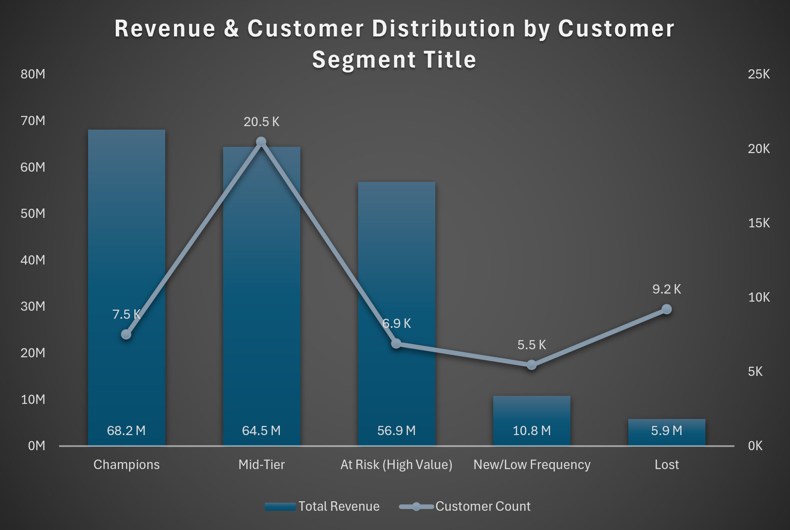

An earlier segmentation project (LTV-only, percentile-based) grouped customers into High/Mid/Low value tiers, but that grouping couldn't distinguish an actively engaged high spender from one who had already gone quiet. That project's own limitations section flagged this gap: without a churn signal inside the high-value tier, the recommendation to "protect high-value accounts" had no way to size a target list or set a concrete retention goal.
This project closes that gap using RFM (Recency, Frequency, Monetary) scoring on the same Contoso dataset (PostgreSQL), run through DBeaver/pgAdmin.
Same customer/order base as the segmentation project — order-level transaction data with customer ID, order date, quantity, net price, and exchange rate. Built and run in PostgreSQL.
Three CTEs, stacked:
Before trusting the output, two checks were run rather than assuming correctness:
The segment definitions matter more than the scoring mechanics. Champions requires all three scores ≥4 — recent, frequent, and high-spend simultaneously. At Risk (High Value) requires recency ≤2 combined with monetary ≥4 — it deliberately ignores frequency, because a customer can have gone quiet after a genuinely high-value purchase history regardless of how often they ordered. That's the segment the prior LTV-only approach couldn't see: it would have lumped these customers in with active top spenders on lifetime value alone.
| Segment | Customers | % of Base | Total Revenue | % of Revenue |
|---|---|---|---|---|
| Champions | 7,493 | 15.1% | $68.2M | 33.1% |
| Mid-Tier | 20,461 | 41.4% | $64.5M | 31.3% |
| At Risk (High Value) | 6,878 | 13.9% | $56.9M | 27.6% |
| New/Low Frequency | 5,453 | 11.0% | $10.8M | 5.2% |
| Lost | 9,202 | 18.6% | $5.9M | 2.9% |
6,878 customers — 13.9% of the base — carry $56.9M in historical revenue but have gone quiet on recency. Under the prior LTV-only segmentation, this group was invisible, folded into the same "High Value" bucket as customers still actively buying. Lost customers, at 18.6% of the base, account for only 2.9% of revenue — confirming that segment isn't worth aggressive win-back spend.

This gives the prior segmentation project's second priority the number it was missing: a defined, dollar-quantified population to target instead of a general instruction to protect high-value accounts. A win-back campaign aimed specifically at the At Risk (High Value) segment — rather than the broader high-value tier — has a concrete target list and a revenue figure to size the effort against. Lost customers can be explicitly excluded from retention spend given their negligible revenue share.
Query file: 4_rfm_segmentation.sql, run against the same
PostgreSQL database as the segmentation and cohort analysis project.
View on GitHub →